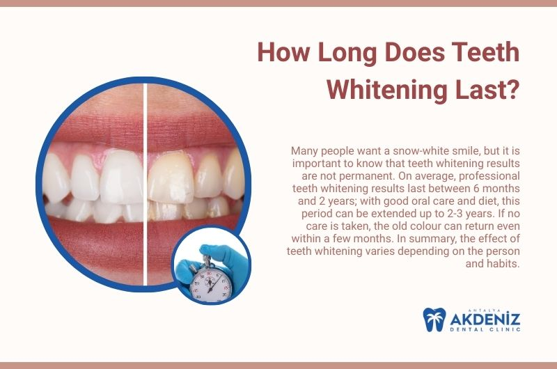

Many people want a snow-white smile, but it is important to know that teeth whitening results are not permanent. The short answer: Teeth stay white until they are stained again. Whiteness returns more quickly in those who frequently consume colouring foods such as coffee, tea, red wine. By avoiding such habits, the whitening effect can be maintained for longer. On average, professional teeth whitening results last between 6 months and 2 years; with good oral care and diet, this period can be extended up to 2-3 years. If no care is taken, the old colour can return even within a few months. In summary, the effect of teeth whitening varies depending on the person and habits.
Regular care and avoiding foods that cause staining ensures that the bright smile obtained with teeth whitening is preserved for a longer period of time.
Why are teeth discoloured?
In order to understand the permanence of whitening, it is first necessary to look at why teeth change colour. Due to the porous structure of the tooth enamel, various internal and external factors can darken the tooth colour over time:
Physiological ageing: As the age progresses, the enamel layer becomes thinner, the dentin thickens and the teeth naturally turn yellow.
Food and drinks: Pigmented foods such as coffee, tea, cola, red wine, red wine, foods with tomato paste, blueberries cause staining on the tooth surface when consumed for a long time. General rule: Anything that can stain a white T-shirt can also stain teeth.
Cigarettes and tobacco: The tar and nicotine in cigarette smoke can penetrate the enamel and form yellowish-brown stains within a few months. In people who use tobacco products, teeth become discoloured quickly.
Inadequate oral care: If regular brushing and flossing are not used, plaque and tartar accumulated on the surface increase staining.
Medications (Antibiotics): Antibiotics such as tetracycline used in infancy or pregnancy can be incorporated into the structure of developing teeth and cause internal grey/brown staining. Such intrinsic stains are deeper and more difficult to remove.
Root canal treatment: Pulp (dental nerve) death or inability to feed the tooth from the inside after root canal treatment may cause the tooth to turn dark yellow/grey in time.
Amalgam fillings: Old type amalgam (silver) fillings may give grey-black reflections to the surrounding dental tissue over time.
Trauma: If the nerve tissue dies as a result of a blow to the tooth, the tooth may change colour due to internal bleeding and tissue residues.
Discolouration caused by the above reasons may be of internal (intrinsic) or external (extrinsic) origin. While superficial external stains can be removed with a good cleaning or bleaching, the bleaching process for internal stains may be longer and more laborious. For example, tetracycline-induced internal staining may require months of treatment to achieve the desired results.
How does teeth whitening work?
Teeth whitening (bleaching) takes place by chemically breaking down the coloured organic/inorganic molecules that have penetrated the tooth enamel. The active ingredient of the bleaching gels used in this process is hydrogen peroxide. Some bleaching gels contain hydrogen peroxide directly, while others are in the form of carbamide peroxide. Carbamide peroxide is a chemically more stable compound and slowly turns into hydrogen peroxide when it comes into contact with saliva in the mouth.
Hydrogen peroxide (HP): High concentration forms are generally used in office (clinical) whitening. It is strong and fast-acting; it lightens tooth colour with short applications of 30-45 minutes. However, high levels of HP may cause temporary sensitivity in teeth.
Carbamide peroxide (CP): Carbamide peroxide in concentrations of 10-15% is applied in the mouth for a few hours or overnight and gradually takes effect. A gel containing 35% CP is chemically equivalent to approximately 12% HP. In other words, CP provides a controlled whitening over a longer period of time.
Hydrogen peroxide oxidises the coloured molecules in the enamel, so-called chromogens, with oxygen radicals, thus breaking the dark bonds and lightening them. During the process, the enamel or dentin structure is not disturbed; only the coloured particles in between are removed. When the whitening process is applied correctly, it does not cause permanent damage to the tooth enamel, but temporary dehydration (water loss) and mineralisation may occur. For this reason, the chalk-white tone seen at the end of the office whitening session may regress slightly as the teeth moisturise. The actual whitening result should be clearly evaluated 1-2 weeks after the procedure when the teeth regain moisture balance.
How many types of teeth whitening methods are there?
Teeth whitening treatments can basically be analysed under 5 different methods:
Home teeth whitening: It is done with plaques specially prepared by the physician and low concentration gels applied at home.
Office type teeth whitening: It is a single-session rapid whitening process in the dental clinic with the help of high-concentration gel and light / laser.
Combined teeth whitening: The method that provides maximum whiteness by using office-type and home-type applications together.
Single tooth whitening (Internal whitening): It is the process of internal whitening of discoloured single teeth that have undergone root canal treatment.
Zoom whitening: It is a combined whitening protocol applied in a clinical environment with a special blue LED light system.
You may also hear phrases such as 'laser whitening' or 'biological whitening', which may be some marketing terms. The laser or LED light is a tool used to activate the peroxide in the office gel and speed up the process. Biological whitening, on the other hand, is a term used for whitening with gels suitable for sensitive teeth, with very low hydrogen peroxide content and containing enamel crystals (hydroxyapatite). Basically, the essence of all methods is the same; the differences are in the method of application, duration and gel concentration used.
How permanent is the whiteness obtained?
The result obtained after whitening does not remain constant for life. The time your teeth stay white will vary depending on the foods you consume, your oral care and habits. Generally, the whiteness effect starts to decrease between 6 months and 1 year. For an average person, it may take 1-2 years for the results to disappear completely. However, the following factors affect this period:
Consumption habits: Whitening lasts longer in a person who avoids coloured food and beverages and eats water and light-coloured foods. On the contrary, those who frequently consume things that stain teeth such as coffee, tea, wine, cola, curry, soy sauce, chocolate, etc. may lose tone within a few months. For example, a person who drinks several cups of coffee a day will experience discolouration faster than a non-drinker.
Smoking: Tobacco habits such as cigarettes and pipes are one of the biggest enemies after whitening. If the teeth of a non-smoker can remain white for 2 years, the same whiteness may regress within 6 months in a regular smoker.
Oral hygiene: After whitening, it is necessary to brush the teeth at least twice a day, floss regularly and prevent plaque formation with oral care water. In people who take good care, stains hold less and whiteness is preserved longer.
Tooth structure: The enamel structure of each individual is different. Some teeth are structurally more porous and prone to staining. In these people, whitening permanence may be a little shorter.
What should be considered to increase permanence after whitening?
The first days after the whitening treatment are critical to stabilise the result you have achieved. Especially in the first 48 hours and if possible in the first 1-2 weeks, you should pay attention to some points:
- Avoid coloured beverages: Tea, coffee, red wine, cola, fruit juices (especially cherry, pomegranate, orange) should not be consumed in the first days if possible. These drinks can quickly penetrate the enamel with open pores and cause discolouration. Prefer water, milk, light coloured herbal teas.
- Avoid acidic food and drinks: Acidic foods such as soda, energy drinks, citrus fruits, vinegar can slightly erode tooth enamel. Since the enamel surface is temporarily sensitive after bleaching, acids both increase sensitivity and prepare the ground for discolouration.
- Avoid tobacco products: Do not use products such as cigarettes, pipes, hookahs. Nicotine and tar, when combined with saliva, can adhere to the tooth surface and instantly leave a yellowish layer. It is best to stay away from it, especially in the first 1 week.
- Avoiding extreme cold and heat: In the first few days, foods such as very cold iced drinks or very hot tea and soups can make sensitive teeth ache. Eating warm foods and consuming room temperature drinks will make you comfortable.
- Beware of colourful foods: Try to avoid intensely coloured foods such as curry, tomato paste, soy sauce, spinach, beetroot, carrots for at least 3-4 days. Use more white/yellow-toned foods (potatoes, pasta, white meat, bananas, etc.) at meals.
- Do not neglect oral care: Brush your teeth gently with a soft toothbrush at least 2 times a day. Since there may be some sensitivity on the first day after whitening, it is useful to brush with fluoride toothpastes for sensitive teeth without pressing. Prevent plaque accumulation by using dental floss.
- Follow dentist recommendations: If your dentist has given you a gel to apply after the procedure or recommended a special rinse, do not neglect it. Be sure to go to your follow-up appointment.
After the first period, it is necessary to avoid habits that can colour the teeth as much as possible, or at least reduce the amount. It is of course difficult to maintain a light-coloured diet for a lifetime, but it is essential to pay attention for the first 1-2 weeks to prolong the whitening effect. In the following period, you can keep your teeth white for a long time with balanced consumption and good oral hygiene. In addition, the use of colour-protective whitening toothpastes (without abrasive particles) can help with daily care.
Conclusion: Maintaining a white smile is in your hands
Teeth whitening is one of the most popular aesthetic procedures in modern dentistry and, when performed correctly, provides safe, effective results. However, keep in mind that whitening is not permanent, and just like other care procedures, its effect may diminish over time. The lifestyle you lead after whitening your teeth will determine how long you can maintain your results.
To summarise:
- Whitening removes existing discolouration in the tooth structure, but does not make the teeth immune to future stains. In other words, the result is not permanent, but a periodic aesthetic.
- In an average individual, the effect of professional whitening lasts in the order of months to years. Bad habits shorten it, good care prolongs it.
- It is possible to repeat the procedure when you experience discolouration and it does not harm the teeth when done at the right intervals. In this respect, whitening is a cosmetic care that can be renewed when necessary.
If your teeth return to their natural colour, do not be discouraged and contact your dentist. You may be able to regain the brightness of the first day with a single session of reinforcement. Remember that your smile shines as much as you care for it - with regular care and professional support, you can enjoy snow-white teeth for many years.